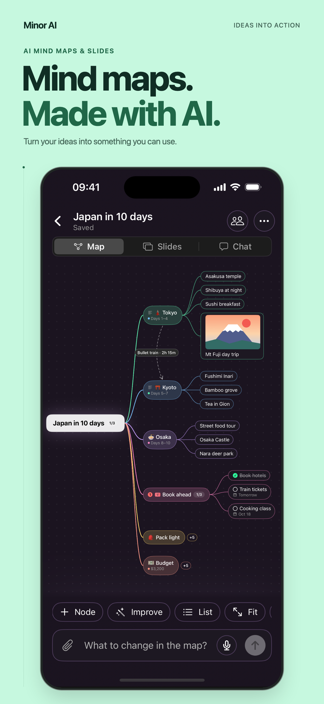
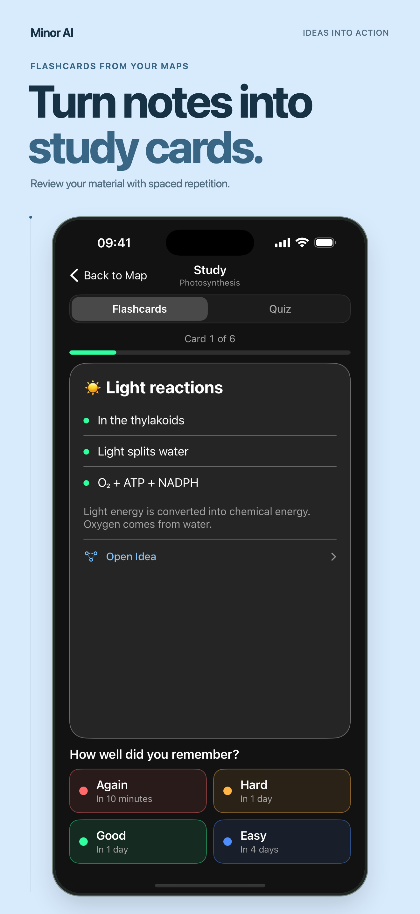
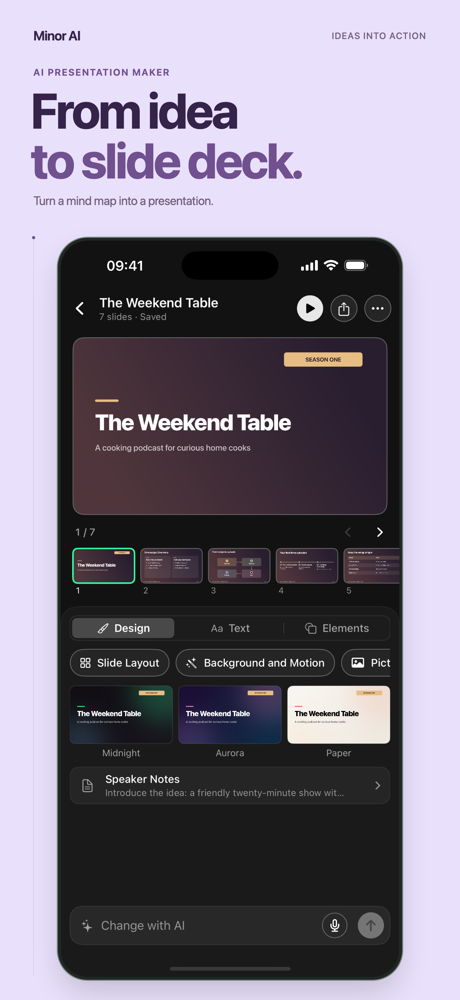
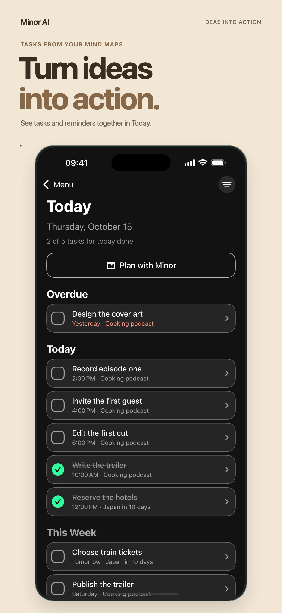

Minor AI · Four ways in.
English (US) · Custom Product Pages · Minor AI 3.0.1

01 · Mind maps
02 · Study
03 · Presentations
04 · TasksFresh app captures · Real-life examples · 1320 × 2868 · English (US)